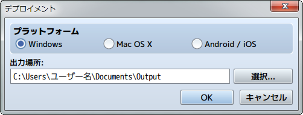

出力フォーマット
デプロイメント

各プラットフォーム用の配布パッケージを出力します。Windows、Mac OS X、Android、iOSへの出力が可能です。
- Windowsの場合
-
出力されたゲームフォルダを配布します。
ゲームフォルダをパッケージングしてexeファイルのみ配布する場合は、［Enigma Virtual Boxの使い方］の項目をご覧ください。 - Mac OS Xの場合
-
出力されたゲームフォルダ、もしくはゲームフォルダ内のファイルGame.appを配布します。
※Windows環境ではGame.appはフォルダとして表示されますが、Mac OS X環境ではアプリケーションとして起動することができます。 - Android／iOSの場合
- ［Androidアプリへの変換］［iOSアプリへの変換］の項目をご覧ください。
- Web上で公開する場合
- プロジェクトフォルダをそのままWebサーバーにアップロードするとブラウザ上でプレイすることができます。
※プロジェクトフォルダは新規プロジェクトを作成・保存したときに［場所］で設定した箇所にあります。
※Game.rpgprojectとsaveフォルダはゲームの実行に必要ありませんが、そのままアップロードしても特に支障はありません。
- ゲームプレイの動作環境
-
動作環境 HTML5 CanvasとWeb Audio APIに対応したもの
iOS8以上
Android4.4以上推奨環境 Windows, Android: Google Chrome
Mac OS X, iOS: Safari※スマートフォンのブラウザでプレイする場合は、Wi-Fi環境でプレイしてください。
※WebGL対応ブラウザでのプレイを推奨します。